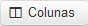

A tela é apresentada com vários filtros (não necessariamente deverão estar preenchidos ou selecionados) para pesquisa de item de GAB.
Ao clicar no botão( ) é gerada uma tabela para visualização. Você poderá escolher quais campos apareceram na tabela clicando em (
) é gerada uma tabela para visualização. Você poderá escolher quais campos apareceram na tabela clicando em ( ).
).
Temos os seguintes filtros para pesquisa:
Organizações Militares: Escolha se quer incluir OM subordinadas.(Perfil de Diretor)
Divisão: Clique na opção desejada para o Tipo de Divisão.
N° Item GAB: Digite o número do item GAB. Disponível para consulta na tela 'Auditoria Retrospectiva/Realizar Auditoria'.
N° GAB: Digite o número da GAB. Disponível para consulta na tela 'Acompanhamento/GAB'.
Nº Lote: Digite o número do lote.
Profissional: Digite o nome do profissional.
Credenciado(nome fantasia): Digite o nome do credenciado.
Beneficiário: Digite o nome do beneficiário.
Idade Beneficiário: Escolha a faixa de idade.
SARAM: Digite o SARAM do beneficiário.
Procedimento: Digite o código do procedimento ou sua descrição.
Grupo: Digite o grupo do procedimento.
Subgrupo: Digite o subgrupo do procedimento.
Data de Geração: Escolha o período em que o Item GAB foi gerado.
Data de emissão: Escolha o período em que o Item GAB foi emitido.
Data de apresentação: Escolha o período em que o Item GAB foi apresentado.
Estado de item: Escolha o estado do Item de GAB (Criado, Cancelado, Não Realizado, Aguardando Auditoria, Auditoria Iniciada, Não Conforme, Conforme ou Enviado para Desconto).
Estado GAB: Escolha o estado da GAB (Gerada, Emitida, Cancelada, Apresentada, Em Auditoria ou Auditada).
Titular: Escolha somente a visualização de GAB geradas dos titulares.
Comparar valores: Digite uma faixa de valores.

Para adicionar ou remover as colunas exibidas nos resultados clique em() e marque ou desmarque as caixas com o nome da coluna.